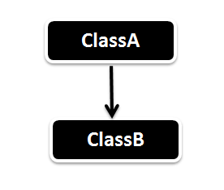
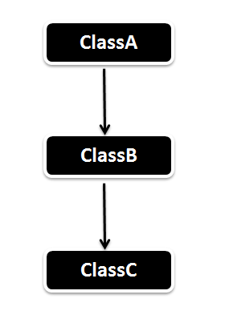
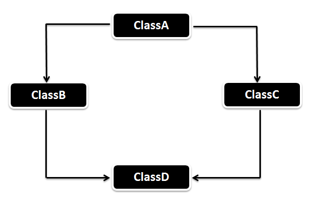

Mеханізм утворення нових класів на основі використання вже існуючих.
Типи наслідування
- Single Inheritance 
- Multiple Inheritance (Through Interface)
- Multilevel Inheritance 
- Hierarchical Inheritance
- Hybrid Inheritance (Through Interface) 


Kонцепція в програмуванні, відповідно до якої використовується спільний інтерфейс для обробки різних спеціалізованих типів.
Polymorphism is the ability of an object to take on many forms. The most common use of polymorphism in OOP occurs when a parent class reference is used to refer to a child class object.
Досягається завдяки method overloading( you have more than one method with the same name within the same class but the conditions here is that the parameter which is passed should be different - Static Binding) i method overriding(same method signature in different classes).
Dynamic Binding or Late Binding or Runtime Polymorphism
When the Child class didn’t override the Parent class method as in the above case then the display() method of the Parent will be called.
the Child class method cannot be called
ParentClass obj2 = new ChildClass();
// Child Class disp () will be called, as it reference to the child class.
obj2.disp();
Connecting a method call to a method body is called binding. When binding is performed before the program is run, it’s called early binding.Late binding means that the binding occurs at run time, based on the type of object. Late binding is also called dynamic binding or runtime binding.All method binding in Java uses late binding unless the method is static or final (private methods are implicitly final). Constructors are static.The only safe methods to call inside a constructor are those that are final in the base class.
The access modifier of the overriding method(method in the Child class) cannot be more restrictive than the Parent class.
When Parent class method doesn’t throw any exception then Child class overriden method can declare UnChecked Exception (Runtime Exception). When Parent class declares an Exception then the Child class overriden method can declare the same or sub class exception or no exception.
You can overload a static method in Java. We cannot overload two methods which differs in static keyword but has the same method signature.
We cannot Override a static method in Java. When the Child class also has defined the same static method like Parent class, the Parent method is called.
Принцип, згідно з яким будь-який клас повинен розглядатися як чорний ящик - користувач класу повинен бачити і використовувати тільки інтерфейсну частину класу (тобто список декларованих властивостей і методів класу) і не вникати в його внутрішню реалізацію.
Encapsulation in Java is the process of wrapping code and data together into a single unit.
Advantages in encapsulation:
- Encapsulation increases the maintianability of the code without any break.
- Provides you the better control over the data, suppose if you want the values which greater than 500 alone to be set, then you can simply write the restriction logic in the setter method.
- You can make the fields read-only or write-only.
Надання об'єкту характеристик, які відрізняють його від усіх інших об'єктів, чітко визначаючи його концептуальні кордони.
Виділення загальних характеристик об'єкта, виключаючи набір незначних. З допомогою цього принципу дані перетворюються в об'єкти. Відділяє реалізацію обєктів від їх деталей. Animal"<-Dog.
Abstraction is a process of hiding the implementation details from the user, only the functionality will be provided to the user. In other words, the user will have the information on what the object does instead of how it does it.In Java, abstraction is achieved using Abstract classes(partial abstraction) and interfaces(full abstraction).
Abstraction is a process of hiding the implementation details and showing only functionality to the user.
A Marker interface is a interface with no variables and methods, in simple words, we can say that empty interface in java is called marker interface (Serializable, Cloneable, Remote ).Used to indicate something to compiler or JVM. the need for the marker interface is eliminated by the introduction of Java Annotation feature.
Fields defined in interfaces cannot be "blank finals," but they can be initialized with non-constant expressions.